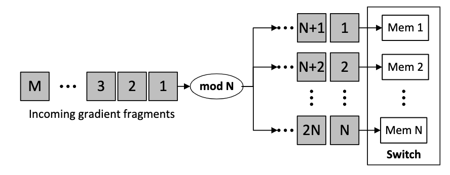

This work is a continuation of the gradient routing (see this post).
INFOCOM23: (Rejected) Scores 3 3 3.
Accepted by IWQoS 23 (5 4 3 3).
By aggregating gradients in programmable switches, multiple gradients can be reduced to 1 aggregated gradient, thus mitigating the communication overhead. However, the aggregation performance is limited by its on-chip memory size.
Existing solutions adopt the memory sharing scheme to conduct in-network aggregation.
In particular, the switch memory is divided into $N$ memory units, each of which can store a part of gradients (i.e., gradient fragments) at a time.
Correspondingly, the gradient is divided into $M$ fragments, each having the same size as the memory unit. When one fragment arrives at a switch, it will be hashed to a specific unit according to its index (e.g., fragment $i$ will be hashed to memory unit $i\%N$).
Given that the switch memory size is usually smaller than the gradient size, multiple gradient fragments will be hashed to the same memory unit. Therefore, asynchronously arriving fragments may encounter hash collision, degrading the throughput of in-network aggregation.

The motivation of this work is simple. Since one switch can not store the entire gradient, what about using multiple switches to store?
Given some switches, the traditional way is each switch aggregates a set of workers’ gradients. But we change the way of gradient fragments assignment.
In practice, one model can be divided into a set of sub-models (e.g., model layers), whose gradient is aggregated independently. Our key idea is to schedule sub-model gradients to multiple switches for collaborative in-network aggregation. This makes programmable switches possible to store all gradients and aggregate asynchronously arriving gradients
Distributed Training, In-network Aggregation, Programmable Network — Dec 2, 2022